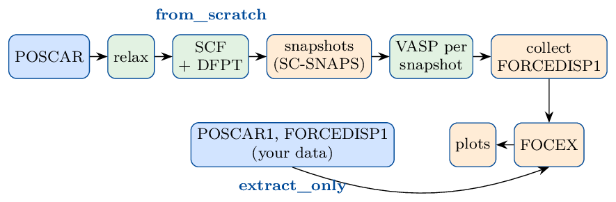

10. FOCEX agent: from a crystal structure to phonons
Version 1.2 (2026-10-27, with FOCEX 9.0). The same manual as a PDF: FOCEX/AGENT/focexagent_manual.pdf in the repository; the agent, its
instruction file and diagnose.py are in FOCEX/AGENT.
10.1. What the FOCEX agent does
FOCEX obtains the force constants of a crystal (harmonic, cubic, quartic, …) by fitting them to the forces that density-functional theory (DFT) gives on the atoms of a supercell in which every atom has been displaced a little at random (a snapshot). From the force constants it computes the phonon dispersion, density of states, group velocities, Grüneisen parameters, elastic constants, sound speeds and the thermal expansion; THERMACOND then computes the lattice thermal conductivity from the same files.
Making those forces takes many steps: relax the crystal, orient the cell the way FOCEX expects,
compute the Born charges of an insulator, choose a supercell, generate the snapshots, run one DFT
calculation per snapshot, collect the forces, write the five input files of FOCEX and run it. Each
step has its own input files and its own ways to fail. The FOCEX agent, focex-agent.py, does
them all from one short instruction file, checks the result of every step, writes what it did to
report.log, and can be restarted at any time: finished steps are not repeated. When a run
stops, diagnose.py finds out where and why, and writes a script that repairs it
(When a run stops: diagnose.py).
It works in one of two modes:
Mode |
You give |
The agent does |
|---|---|---|
from_scratch |
a crystal structure ( |
VASP relaxation, SCF and Born charges; SC-SNAPS snapshots; one VASP run per snapshot; FOCEX; plots (Mode from_scratch: from a POSCAR to phonons) |
extract_only |
existing supercells and their forces ( |
rotates the data into the FOCEX frame; FOCEX; plots (Mode extract_only: FOCEX on existing data) |


Green: VASP; orange: SC-SNAPS, FOCEX and their tools; blue: your input.
10.2. What you need, and how to install it
You do not need to have used VASP-Flow before: the agent uses it as a library, to write the VASP input files and the batch scripts. This section has everything you need to set up.
The programs
What |
Needed for |
How to get it |
|---|---|---|
VASP 5.4 or newer |
every DFT step (from_scratch only) |
your licence; on a cluster usually a module |
POTCAR library |
VASP: the PAW potentials, one folder per element |
comes with VASP |
MPI |
running VASP in parallel ( |
system or cluster module |
Python ≥ 3.8 with numpy, spglib, pymatgen |
the agent and |
a virtual environment, below |
VASP-Flow |
writes the VASP inputs and batch scripts |
|
FOCEX, |
the fit; reading the forces from the OUTCARs |
this repository, |
SC-SNAPS ( |
the snapshots (from_scratch only) |
this repository, |
gnuplot |
the plots (PDF) |
|
a Fortran compiler |
building FOCEX and SC-SNAPS |
|
Install, once
The same commands on a workstation and on the login node of a cluster (there, load Python 3.8+
and GCC first, e.g. module load gcc python).
cd ~
# 1. this repository: FOCEX, its utilities, SC-SNAPS, the agent
git clone https://github.com/KeivanS/Anharmonic-lattice-dynamics.git
cd Anharmonic-lattice-dynamics
make focex sc_snaps # FOCEX, read_outcar.x, ..., sc_snaps.x -> ~/ALADYN/bin (3 min)
# plain "make" also builds THERMACOND (needs MPI) and ANFOMOD
cd ~
# 2. VASP-Flow; the agent imports it from ~/VASP-Flow
# (another place: export VASP_FLOW_DIR=/that/place)
git clone https://github.com/KeivanS/VASP-Flow.git
# 3. one Python environment for VASP-Flow and the FOCEX agent
python3 -m venv ~/dftphonon-env
source ~/dftphonon-env/bin/activate
pip install numpy spglib pymatgen matplotlib
# 4. optional: the commands focex-agent and focex-diagnose (symlinks in ~/ALADYN/bin)
(cd Anharmonic-lattice-dynamics && make python-tools)
export PATH=~/ALADYN/bin:$PATH # put this line in ~/.bashrc
The agent finds the programs at these places; a program installed elsewhere is named in the
instruction file (FOCEX_X, SC_SNAPS_X, READ_OUTCAR_X, The instruction file: every keyword). With step 4 and the environment active, focex-agent and focex-diagnose are
short for python .../FOCEX/AGENT/focex-agent.py and python .../FOCEX/AGENT/diagnose.py.
Tell VASP-Flow where VASP, MPI and the POTCARs are
The POTCAR library is always given by an environment variable. Put it in your ~/.bashrc
(or ~/.zshrc) so that every job sees it:
export VASP_POTCAR_DIR=/path/to/potpaw_PBE.54 # holds Zn/, O/, Ga/, ...
VASP and MPI come from a profile, a small JSON file in ~/VASP-Flow/profiles/, chosen with
--profile (or PROFILE: in the instruction file):
profile |
use it for |
|---|---|
(none) |
a workstation. VASP from the variables |
|
the same, with the paths written in |
|
a template for a SLURM cluster: edit |
your own ( |
your cluster: copy |
With a SLURM profile, run_workflow.sh begins with the #SBATCH lines and the
module load lines of the profile and is submitted with sbatch.
Check the set-up
source ~/dftphonon-env/bin/activate
python ~/VASP-Flow/check_setup.py local # a workstation; "slurm" on a cluster
It checks Python and its packages, the POTCAR library, VASP and MPI (and on a cluster the profile), and prints for every problem the command that fixes it. Ready. at the end means you can start.
When is the Python environment needed?
It is the same environment as in VASP-Flow’s manual: one, ~/dftphonon-env, serves both (DFT with
VASP-Flow, phonons with the FOCEX agent). It is needed whenever you start focex-agent.py or
diagnose.py: they import numpy, spglib, pymatgen and
VASP-Flow. Either activate it first (source ~/dftphonon-env/bin/activate, then python ...) or
call its interpreter directly (~/dftphonon-env/bin/python ...). The scripts the agent writes
(run_workflow.sh, resubmit_failed.sh, diagnosis/fix_it.sh) contain the full path of the
interpreter you used, so the batch jobs need no activation. The plots need only gnuplot; without it
the agent writes the plot scripts and you run makeplots.sh later, where gnuplot is.
10.3. Quick start
The steps of a from_scratch calculation (Mode extract_only: FOCEX on existing data has those of extract_only):
Make a folder for the material with its crystal structure, in VASP’s POSCAR format, named
POSCAR. Any cell of the crystal will do – primitive or not, any orientation: the agent reduces and orients it.Copy the instruction file
FOCEX/AGENT/focex-agent-instructions.txtinto that folder and edit it. Only two lines are required:Project:(a name) andRANKS:(which force constants to fit, e.g.1 1 1 0 0 0 0 0for harmonic and cubic). Set alsoFUNCTIONAL:andMPI:(the number of MPI ranks for VASP); every other line is optional and shows its default.Where the calculations go is also set in this file, by
PROJECT_DIR:: a path relative to the folder of the instruction file (PROJECT_DIR: runs/ZnO_PBEsol) or absolute (PROJECT_DIR: /scratch/me/ZnO,~allowed). Without it the project folder is a folder named afterProject:next to the instruction file. The agent creates it, with any missing parent folders; if it holds a project already, the agent stops unless--forceis given.Set up the project: the agent creates the project folder with the relaxation inputs and
run_workflow.sh, and prints the command to start it. This takes seconds and runs no VASP.Start the workflow from the project folder, and follow
report.log.If it stops, run
diagnose.py(When a run stops: diagnose.py).
cd ~/work/ZnO # holds POSCAR
A=~/Anharmonic-lattice-dynamics/FOCEX/AGENT
cp $A/focex-agent-instructions.txt .
nano focex-agent-instructions.txt # Project, RANKS, FUNCTIONAL, MPI
source ~/dftphonon-env/bin/activate
python $A/focex-agent.py --profile mycluster # your profile (above)
cd ZnO
sbatch run_workflow.sh # without a profile: nohup bash run_workflow.sh &
tail -f report.log
The options of focex-agent.py are all optional:
option |
meaning |
|---|---|
|
the instruction file, if it is not called |
|
the crystal structure, if it is not called |
|
the VASP-Flow profile (previous section); default: |
|
set up again a project folder that exists already. Its record of finished tasks is reset, so use it only to start over, after removing the old run folders |
Note
Threads. You do not have to do anything about OpenMP threads: the agent runs VASP with one
thread per MPI rank (OMP_NUM_THREADS=1). Without that, a BLAS library built with OpenMP
starts one thread per core in every MPI rank and the cores are oversubscribed many times (a
96-atom ZnO supercell made no SCF step in 30 minutes on 8 ranks). Only if your VASP is built
for hybrid MPI + OpenMP runs and you want them, set VASP_OMP_NUM_THREADS to the number of
threads per rank before you start the workflow.
10.4. Mode from_scratch: from a POSCAR to phonons
run_workflow.sh runs focex-agent.py run <PROJECT_DIR>, which does the eleven tasks below in
order. Each finished task is recorded in state.json and in report.log, with what was
checked; a task that fails stops the workflow, and starting run_workflow.sh again continues
from that task. A job that hits its time limit is simply submitted again.
The supercell tasks are checked again before they are skipped:
A removed or incomplete ``04_supercells/snap_NNN`` folder is written again, and the
supercellstask and every task after it are redone. Only the folders without a converged OUTCAR run VASP.To leave snapshots out on purpose, move their folders to
04_supercells/unused/. They are then not recreated, andFORCEDISP1is collected again from the others.A ``snap_NNN`` folder with no ``03_snaps/poscar_NNN`` stops the workflow.
To add snapshots, raise
SNAPSHOTSin the project’sfocex-agent-instructions.txtand startrun_workflow.shagain. The extra snapshots are made at the same temperature and numbered after the existing ones, which are kept; only the new ones run VASP, then FOCEX is run again on all of them. A lowerSNAPSHOTSremoves nothing.
relaxThe structure you gave is reduced to its primitive cell (Niggli reduction) and rotated into the orientation FOCEX and SC-SNAPS use (The FOCEX frame); the result is
POSCAR.init. VASP relaxes the atoms and the cell shape and volume in01_relax. If the forces are not yet below EDIFFG after NSW ionic steps, the relaxation continues from its last structure (CONTCAR), up to three times.poscar0The relaxed cell is reduced and oriented again and written as
POSCAR0: every later step uses this cell and this Cartesian frame. The report gives its space group and lattice parameters.scfA self-consistent calculation on POSCAR0 in
02_scf(same INCAR, no ionic steps, same k-mesh), which also gives the band gap. If the cell did not change in the previous task, it starts from the charge density and wave functions of the relaxation.dfptFor an insulator (band gap above 0.05 eV,
DFPT: auto): density-functional perturbation theory in02_scf/dfptgives the high-frequency dielectric constant and the Born effective charges of every atom (Born charges and the dielectric constant).DFPT: onforces it,offskips it.snapsThe supercell is chosen (The supercell). SC-SNAPS (
03_snaps) then writes the undistorted supercellposcar_000and 50 snapshots, each atom displaced as in a thermal ensemble of harmonic oscillators of frequencyAVG_FREQat temperatureTEMPERATURE. A temperature you give is used as it is, e.g. to sample the displacements of that temperature for effective phonons; the report gives the resulting rms displacement. Only whenTEMPERATUREis not given, the default 30 K is adjusted (SC-SNAPS rerun at most twice) until the rms displacement is within 15 % ofDISP_TARGET(0.02 Å): large enough for clean forces, small enough for the Taylor expansion of the energy. The undistorted supercell is checked to be an exact multiple of POSCAR0 before any VASP job is run.supercellsOne folder per snapshot,
04_supercells/snap_NNN, with its POSCAR, the SCF INCAR without symmetry (ISYM = 0) and a k-mesh equivalent to the SCF one (The k-mesh of the supercells); magnetic moments given per atom are carried over to the supercell.vasp_snapsThe VASP runs of the snapshots, one after the other. A run that fails does not stop the others; the failed ones are listed in
report.log, andresubmit_failed.shreruns only those. An existing OUTCAR is never overwritten (it is kept asOUTCAR.1, …).collectread_outcar.xreads the positions and forces of every run into04_supercells/FORCEDISP1;POSCAR1is the undistorted supercell. The report gives the largest net force on a supercell (should be ≈ 0) and the largest difference between the positions in OUTCAR and in POSCAR. The undistorted supercell (snap_000, run withISIF = 2; the other snapshots useISIF = 1, which gives only the trace) also gives the stress of the reference structure:stress.params(GPa, tensile positive, i.e. minus thein kBline of OUTCAR divided by 10) is written and copied to the FOCEX folders, where it enters the Huang rows and the elastic constants (stress.params (optional)).focexThe five input files of FOCEX are written in
05_focex(structure.params,latdyn.params,kpbs.params,dielectric.params,default.params) and FOCEX is run. With Born charges a second run without them is made in05_focex/NOBORN, for comparison; with fewer thanLASSO_RATIO(2) equations per unknown, a third run with LASSO, which keeps only the force constants the data need, is made in05_focex/LASSO. The report gives the fit error, the numbers of equations and unknowns, the lowest ω² (a warning below −25 cm⁻²: imaginary modes) and the highest frequency. If the DOS range oflatdyn.paramsdoes not fit the frequencies, FOCEX is run again with one that does.plotsThe gnuplot scripts
bvel.plt,all.plt,qha.pltare filled in and run in every FOCEX folder (The project folder and the results);makeplots.shremakes them.thermacondTHERMACOND in
06_thermacond: linewidths or the thermal conductivity, whenTHERMACOND_JOBis 1, 2 or 3; skipped for 0, the default (Thermal conductivity).
Defaults
ACCURACY: Accurate: ENCUT 600 eV, EDIFF 10⁻⁷ eV, EDIFFG −0.001 eV/Å, PREC Accurate in every VASP step.Normal: 450 eV, 10⁻⁶, −0.003, PREC Normal – cheaper, but the residual forces of the relaxed structure are larger (0.01 eV/Å in a ZnO test), which adds noise to the force constants. DFPT uses EDIFF 10⁻⁸.Relaxation and SCF k-mesh: VASP-Flow’s
coarsedensity (1000 k-points per reciprocal atom),fine(6000) if every element is a metal. Each subdivision is rounded to the nearest integer; VASP-Flow itself rounds to even numbers (multiples of 6 in plane for hexagonal cells), the agent does not. The FOCEX mesh (FOCEX_MESH) is made the same way.50 snapshots. Each gives three equations per atom of the supercell: 20 snapshots of a 96-atom supercell give 5760 equations for the 264 unknowns of ZnO with ranks 1–3, so fewer snapshots are often enough (
SNAPSHOTS).RANGE: 6 2 1 0 0 0 0: neighbour shells kept for ranks 2, 3, 4, …;FC2RANGE: 0: the harmonic force constants are kept over the whole supercell.FOCEX k-mesh
fine; the band-structure path is found automatically.
The supercell
SUPERCELL: takes one of three forms:
SMALL(the default): the multiple m1×m2×m3 of the conventional cell with the fewest atoms whose faces are at least 10 Å apart, at most 100 atoms;LARGE: the same with 14 Å and at most 300 atoms. In both, if no such multiple is small enough, the one with the largest face distance; it keeps the symmetry of the lattice;the supercell matrix itself: nine integers, the three rows of the matrix that the agent writes to SC-SNAPS’s
supercell.inp. The first three integers n11 n12 n13 give the first supercell vector as a combination of the primitive vectors of POSCAR0, RS1 = n11 R01 + n12 R02 + n13 R03; the next three give RS2 and the last three RS3 in the same way (the agent’scell.inphasconvcoord = 1, primitive units). For exampleSUPERCELL: 2 0 0 0 2 0 0 0 2is 2×2×2 primitive cells, and for an fcc crystalSUPERCELL: -1 1 1 1 -1 1 1 1 -1is its conventional cube (4 primitive cells). The determinant must be positive.
The report gives the matrix and the number of atoms (for SMALL and LARGE also the face distance).
The FOCEX frame
FOCEX and SC-SNAPS build the conventional cell from a, b, c, α, β, γ with a along x and b in the
xy plane, and the supercells, forces and Born charges must be in that same Cartesian frame. The
agent rotates the cell into it at the start, so everything VASP computes is already in the right
frame. structure.params lists the conventional cell (line 1), the primitive vectors in its
units (line 2) and the atoms in conventional coordinates.
The k-mesh of the supercells
If the supercell is a diagonal multiple of the primitive cell, its mesh is the SCF mesh divided by
the multiples, rounded up (6 6 4 with a 3×3×2 supercell gives 2 2 2). Otherwise (every multiple of
a centred conventional cell) it keeps the k-point spacing of the SCF mesh. KPOINTS_snaps sets
it yourself (Changing the files the agent writes).
10.5. Mode extract_only: FOCEX on existing data
Use it when the supercell forces exist already – from an earlier calculation, another code, or a colleague – and you want FOCEX’s force constants and phonons. No VASP and no SC-SNAPS are run.
The data folder (named in the instruction file with DATA:) holds
POSCAR1andFORCEDISP1: a supercell and the positions and forces of its snapshots, in FOCEX’s format (whatread_outcar.xorread_qe.xwrite); more pairsPOSCAR2/FORCEDISP2, … are all used. Any orientation.optionally
POSCAR: the primitive cell, in the same orientation as the data; without it, spglib finds the primitive cell ofPOSCAR1.optionally
dielectric.params: the dielectric constant and the Born charges, in the frame of the data, one 3×3 block per atom of that primitive cell. With more than one atom of a species the primitivePOSCARis required, to fix the order of the atoms.
SPECIES: Mg O names the elements when the POSCARs have no element line.
What the agent does. At set-up it symmetrizes the lattice of the primitive cell (DFT lattice
parameters given to 6–7 digits make FOCEX’s symmetry analysis lose force constants), finds the
rotation into the FOCEX frame, and rotates the supercells, the positions and forces in
FORCEDISPi, the dielectric constant and the Born charges with it. The report gives the rotation
and the size of the symmetrization. The workflow then has only the tasks focex and plots.
cat > focex-agent-instructions.txt <<'EOF'
Project: MgO
MODE: extract_only
DATA: ~/data/MgO_forces # POSCAR1, FORCEDISP1, dielectric.params
SPECIES: Mg O
RANKS: 1 1 1 0 0 0 0 0
EOF
python ~/Anharmonic-lattice-dynamics/FOCEX/AGENT/focex-agent.py
cd MgO && bash run_workflow.sh # FOCEX takes minutes: no batch job needed
Checked on MgO data given in a rhombohedral orientation: the fit error (7.197 %), the 35 unknowns, the frequencies and the elastic moduli are those of a FOCEX run in the original frame.
10.6. The instruction file: every keyword
One keyword per line, KEYWORD: value; # starts a comment. The VASP keywords are those of
VASP-Flow (its manual lists all of them); the common ones are below.
keyword |
default |
meaning |
|---|---|---|
project |
||
|
(required) |
a name, used in titles and as the default folder |
|
the Project name |
folder of the calculations, relative to the instruction file or absolute; created by the agent |
|
from_scratch |
or extract_only |
|
– |
extract_only: the data folder |
|
– |
extract_only: element names, if the POSCARs have none |
|
none |
the VASP-Flow profile, as |
force constants |
||
|
(required) |
8 flags for ranks 1–8: |
|
6 2 1 0 0 0 0 |
neighbour shells for ranks 2–8 |
|
0 |
0: harmonic range = the supercell |
|
2 |
below this many equations per unknown, an extra LASSO run |
VASP (VASP-Flow keywords) |
||
|
R2SCAN |
PBE, PBEsol, LDA, AM05, R2SCAN, HSE06, VV10 |
|
the profile’s |
MPI ranks for VASP |
|
Accurate |
or Normal (Mode from_scratch: from a POSCAR to phonons) |
|
by ACCURACY |
plane-wave cutoff (eV) |
|
coarse or fine |
k-mesh of the relaxation and SCF |
|
– |
magnetic moments, e.g. |
|
auto |
Hubbard U from VASP-Flow’s table: |
|
auto |
Born charges: auto (if there is a gap), on, off |
|
yes |
|
snapshots |
||
|
SMALL |
SMALL, LARGE, or the 9 integers of the supercell matrix, as in |
|
50 |
number of snapshots; can be raised later (Mode from_scratch: from a POSCAR to phonons) |
|
30 |
K; given: used as is; not given: 30 K adjusted to DISP_TARGET |
|
400 |
cm⁻¹, the frequency of the oscillators of SC-SNAPS |
|
0.02 |
Å, the rms displacement wanted (only without TEMPERATURE) |
FOCEX |
||
|
fine |
k-mesh of latdyn.params: coarse, fine, a density, or 3 integers |
|
0 |
0: automatic band path; 1: give a |
|
40 |
points per segment of the band path |
THERMACOND (Thermal conductivity) |
||
|
0 |
0 none; 1 linewidths; 2 kappa, direct; 3 kappa, iterative (latdyn line 8) |
|
the FOCEX mesh |
n1 n2 n3 (line 1) |
|
0 900 31 |
Tmin Tmax (K), number of temperatures (line 6) |
|
0 |
job 2: 0 conjugate gradient, 1 SVD (line 9) |
programs |
||
|
newest |
the FOCEX binary |
|
|
SC-SNAPS |
|
|
reads OUTCARs |
|
newest |
THERMACOND (MPI build) |
10.7. Changing the files the agent writes
Every file the agent generates can be changed from the instruction file, with a block named after
the file: a line with its name, the contents, and a line with the name followed by _END.
INCAR blocks are merged tag by tag: the tags you give replace or add to those the agent writes; the others stay.
INCARapplies to every VASP step;INCAR_relax,INCAR_scf,INCAR_dfpt,INCAR_snapsto one.Every other block replaces the whole file, so it must be complete:
KPOINTS(relaxation and SCF),KPOINTS_snaps,cell_inp,supercell_inp,snaps_inp(SC-SNAPS),structure_params,latdyn_params,kpbs_params,dielectric_params,default_params(FOCEX).
Simple choices – the supercell, the number of snapshots, the FOCEX k-mesh – have their own keyword; use a block only for what has none.
Example. Wurtzite ZnO without Hubbard U (VASP-Flow would otherwise put its tabulated U on Zn,
an oxide), LASPH in every VASP step, stricter electronic convergence only in the supercell
runs, a 3×3×2 supercell, 20 snapshots, a denser FOCEX mesh, and your own band path
Γ–M–K–Γ–A, which replaces kpbs.params:
Project: ZnO
RANKS: 1 1 1 0 0 0 0 0
FUNCTIONAL: PBEsol
GGA_U: OFF
MPI: 40
SUPERCELL: 3 0 0 0 3 0 0 0 2 # rows: supercell vectors in primitive units
SNAPSHOTS: 20
FOCEX_MESH: 12 12 8
KPATH: 1 # the band path is given below
INCAR # every VASP step (merged tag by tag)
LASPH = .TRUE.
INCAR_END
INCAR_snaps # the supercell runs only
NELM = 200
ALGO = All
INCAR_snaps_END
kpbs_params # replaces kpbs.params (FOCEX's band path)
1 # coordinates in units of the primitive reciprocal vectors
60 # k-points per segment
4 # number of segments
G 0.000000 0.000000 0.000000
M 0.500000 0.000000 0.000000
K 0.333333 0.333333 0.000000
G 0.000000 0.000000 0.000000
A 0.000000 0.000000 0.500000
kpbs_params_END
After the set-up you can read 01_relax/INCAR before anything runs.
10.8. Born charges and the dielectric constant
In an insulator, the long-range Coulomb interaction between the displaced ions splits the longitudinal and transverse optical modes near Γ (LO–TO splitting). FOCEX includes it with the Born effective charges Z* and the high-frequency dielectric constant ε∞; without them the optical branches near Γ are wrong.
from_scratch: the agent computes them (task dfpt) when the SCF shows a band gap, writes them to
dielectric.params, and makes for comparison a FOCEX run without them in05_focex/NOBORN.DFPT: offskips them;oncomputes them for any material.extract_only: give them in
dielectric.paramsin the data folder.your own values, in either mode: a
dielectric_paramsblock (it replaces the file).
Note
VASP prints Z*ij with i the direction of the field and j that of the displacement;
FOCEX expects the transpose, which the agent writes. BORN_TRANSPOSE: no writes them as VASP
prints them; you should not need it.
10.9. The project folder and the results
file or folder |
what it is |
|---|---|
|
the copy of your instruction file that the runs read |
|
one entry per task: OK or FAILED, minutes, what was checked – read this first |
|
the finished tasks and the numbers passed between them |
|
the job; |
|
your structure; reduced and oriented; relaxed |
|
VASP: relaxation, SCF, Born charges |
|
SC-SNAPS input and the snapshots |
|
|
|
FOCEX: inputs, outputs, plots; |
|
THERMACOND ( |
|
written by |
In 05_focex: the force constants fc2.dat, fc3.dat, … with the cell in lat_fc.dat;
the dispersion bs_freq.dat; the elastic constants and moduli mech.dat; thermodynamics and
thermal expansion thermo_QHA.dat; and three PDFs: <Project>.pdf (the dispersion coloured by
group velocity, and the group velocities against frequency), all-<Project>.pdf (Grüneisen
parameters, density of states, dispersion) and qha.pdf (thermal expansion, Grüneisen
parameter, bulk modulus, thermodynamic functions, free energy against volume). Running FOCEX
describes every output file. The large VASP files (WAVECAR, CHGCAR, CHG, …) are deleted when no
longer needed; the OUTCARs never.
10.10. When a run stops: diagnose.py
A=~/Anharmonic-lattice-dynamics/FOCEX/AGENT
python $A/diagnose.py ~/work/ZnO/ZnO # one or more project folders
less ~/work/ZnO/ZnO/diagnosis/report.txt
bash ~/work/ZnO/ZnO/diagnosis/fix_it.sh
diagnose.py itself changes nothing. It lists every task as done, FAILED, INTERRUPTED (the job
was killed inside it) or not reached, or reports that the project is still running or not yet
started. For a failed task it finds the cause from report.log, the OUTCARs, vasp.out,
focex.out and the SLURM logs, and writes diagnosis/report.txt (what failed, where, the
evidence, what the fix will change) and diagnosis/fix_it.sh. VASP failures are recognised with
the rules of VASP-Flow’s diagnosis tool; FOCEX, SC-SNAPS and read_outcar.x stops by their
messages.
cause |
meaning |
what fix_it.sh does |
|---|---|---|
|
the job hit its time limit |
walltime × 2, resubmit |
|
SCF not converged in NELM steps |
ALGO = All, NELM = 200 |
|
the Davidson eigensolver failed |
ALGO = All |
|
the relaxation’s line search failed |
IBRION = 1 |
|
relaxation not converged |
resubmit (continues from CONTCAR) |
|
out of memory |
KPAR = 1 |
|
MPI did not start; never ran; killed |
resubmit |
others |
disk quota, symmetry, an unknown stop, … |
held, with the error lines |
New INCAR tags go into the INCARs of the failed runs and into the matching block of the project’s
instruction file (INCAR_snaps, …), so that later runs use them too. Before it changes
anything, fix_it.sh checks that nothing is running and that nothing changed since the
diagnosis, and copies every file it edits to diagnosis/backup_<date>/; then it resubmits
(sbatch with a SLURM profile, otherwise bash in the background). When the fix needs your
judgement – a cause it does not know, a fix that was already tried, a new supercell – the script
is held: it prints what to do and stops, and bash fix_it.sh --anyway runs its suggested
commands as they are. Run diagnose.py again when the resubmitted job has finished.
10.11. Thermal conductivity
The last task, thermacond, runs THERMACOND on the force constants of 05_focex. Whether it
runs is decided by the THERMACOND job, line 8 of latdyn.params, which you set in the
instruction file:
|
what THERMACOND does |
|---|---|
0 (default) |
nothing: the task is skipped (FOCEX has already given the bands, DOS and Grüneisen parameters) |
1 |
three-phonon linewidths of every mode along the band path ( |
2 |
thermal conductivity: RTA and the direct solution of the BTE |
3 |
thermal conductivity: RTA and the iterative solution of the BTE |
RANKS: 1 1 1 0 0 0 0 0 # cubic force constants are needed
THERMACOND_JOB: 2
THERMACOND_MESH: 12 12 12 # latdyn.params line 1 for THERMACOND (default: the FOCEX mesh)
THERMACOND_T: 100 900 9 # line 6: Tmin, Tmax (K), number of temperatures
# THERMACOND_SOLVER: 0 # line 9, job 2: 0 conjugate gradient, 1 SVD
The task copies lat_fc.dat, fc2.dat, fc3.dat, structure.params,
dielectric.params and kpbs.params from 05_focex to 06_thermacond, writes there
FOCEX’s latdyn.params with lines 1, 6, 8 and 9 from these keywords, and runs tcond-2.0.x
with the MPI command of the profile; 05_focex is not changed. A latdyn_params block
(Changing the files the agent writes) sets all 13 lines for both FOCEX and THERMACOND, and its line 8 is the job
unless THERMACOND_JOB is given. The mesh is the expensive choice: the FOCEX default (fine)
is usually far too dense, so set THERMACOND_MESH and converge kappa with it.
The report gives, at up to seven of the temperatures, kappa_RTA, the full (direct or iterative)
solution and the coherences term kappa_C of the Wigner formulation (W/mK, average of the
diagonal), and a warning if the full solution falls below the RTA, which it should not do (the
direct solver has an open issue: compare with job 3). The complete results are in
06_thermacond: kappa_vs_T.dat, kappa_wigner.dat, Qvalue.dat (scattering rates) and
the other files described in Running THERMACOND. An existing project gets the task by adding
THERMACOND_JOB to its focex-agent-instructions.txt and submitting run_workflow.sh
again: the finished tasks are skipped. Changing THERMACOND_JOB, _MESH, _T or
_SOLVER later and submitting again runs the task again; V3*delta is read back from
06_thermacond/V3DELTA when the force constants and the mesh are the same (job 3 after job 2,
new temperatures).
10.12. Version history
- 1.2
2026-10-27, with FOCEX 9.0: the undistorted supercell
snap_000is run withISIF = 2, andcollectwrites its stress, minus thein kBline of OUTCAR divided by 10, asstress.params(GPa, tensile positive) for FOCEX (Huang rows and elastic constants); the test VASP stand-in prints the stress.- 1.1
2026-10-23: task
thermacond, switched on byTHERMACOND_JOB(latdyn.params line 8), withTHERMACOND_MESH,THERMACOND_T,THERMACOND_SOLVER; a givenTEMPERATUREis kept;SUPERCELLmatrix andPROJECT_DIRdocumented; SC-SNAPS periodic images fixed.- 1.0
2026-10-23, with FOCEX 8.19: modes from_scratch and extract_only; instruction file
focex-agent-instructions.txt,--instr,--coord,PROJECT_DIR;diagnose.py; this manual.